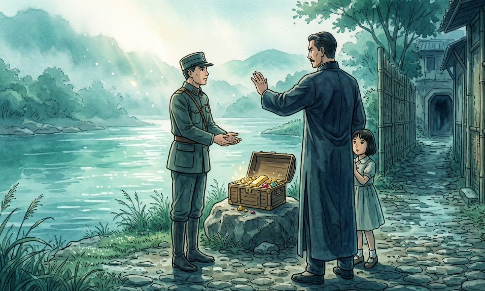

煙雨後的扁鑽：義薄雲天的沉重代價

一九四七年的早春，碧潭的水面上籠罩著一層揮之不去的青灰色薄霧，新店溪無聲地流淌，卻彷彿負載著整座山城的恐懼。在那風聲鶴唳的時節，二二八事件的硝煙已從臺北城蔓延到了新店溪畔。
林先生——這位在新店後街被尊稱為「大尾」的豪傑，正獨自佇立在河岸邊。
他那曾令大七甲檢查哨軍官都噤聲、連超載卡車都不敢阻攔的寬闊脊樑，此時卻顯得沉重。耳邊傳來陳中尉憤怒的咆哮，那是一種絕望的恐戮：「若不交回我女兒，我要血洗新店！」 林先生閉上眼，內心掀起了如新店溪暴漲般的巨浪。他看著街坊鄰里戰慄的眼神，那些是他守護了一輩子的父老鄉親。他心底響起一個聲音：「大人的恩怨，怎能讓查某囝（女孩子）來擔？這不是江湖道義，更不是做人的底頭。」 為了保住這片土地不被鮮血浸染，他決定孤身深入險境，在那幽深且高度過人的防空洞中，將嚇壞的小女孩接了出來。
當他把孩子平安送還時，陳中尉捧出的一箱閃耀金飾，在他眼裡卻如石塊般沉重且令人厭惡。他轉身，冷冷地揮手拒絕，他圖的，從不是這幾兩黃金，而是身為新店街那一份如山般厚重的「人道」與「誠信」。
然而，林先生沒想到，拯救了全村的義舉，竟成了刺向自己的扁鑽！
在後街的一處小酒館裡，酒香混雜著猜忌。平日稱兄道弟的「臺人同胞」，在酒精的催化下，眼神變得如冬日的溪水般寒冽。「你真的沒拿那箱珠寶？還是你一個人私吞了？」 這句質疑像火星般點燃了殺意。趁著林先生幾分醉意、毫無防備之際，那冰冷的扁鑽無情地刺入了他的身體。在那個冷雨的夜裡，鮮血染紅了後街的石子路。躺在船上，他試圖用力吸入更多空氣，喘息聲比船行溪水更快，然，一路從新店到萬華，送醫途中，看著漸漸模糊的碧潭煙雨，心中最牽掛的，竟是家中那尚未出世的孩子——他原本要為孩子打造一個繁華的江山，如今卻只能留下一個英雄殘缺的背影。
劉大哥出生時，第一聲啼哭劃破了家道中落的寂靜。作為遺腹子，他從未體會過那雙能阻攔卡車的大手是什麼溫度？每當他在後街聽聞父親當年的神勇事蹟，心中湧起的不是自豪，而是一種被遺棄的空洞感。「為什麼要當英雄？為什麼要為了救別人的孩子，而丟下我？」 這種對父愛的渴望與怨懟交織成他童年最深沉的心理底色。他在貧寒中長大，看著原本屬於林家在南京東路的百萬遺產、那些深厚的田產與家族榮光，因為父親的猝逝而被旁人巧取豪奪。他失去的，不只是父愛，更是一個本應存在的、衣食無憂的未來。
而對於林家那些失去終生依靠的孤兒寡母來說，生活則是一場漫長而絕望的泅泳。原本與林商號、永昌冷凍場齊名的顯赫家族，在一夜之間成了後街最卑微的存在，一場爭孫齟齬間，母親堅毅地決心獨力撫養遺腹子，把孩子姓氏改為母姓，他從此成為劉家人。她們看著那些昔日仰仗林家威望生存的親族，變臉成奪取家產的狼，心中的信念徹底崩塌。「這世間還有公義嗎？那個用命換回全村平安的男人，最後竟被全村的人遺忘了嗎？」 他們忍受著現實的磨難，在那逼仄、泥土與稻草編織的平房裡，將英雄的故事埋進心底，只餘下對著空蕩蕩舊宅、那一聲長長的，載不動愁緒的嘆息。
新店溪依舊流著，那段碧潭英雄的義勇與遺憾，最終都隱入了後街尋常的煙火之中。